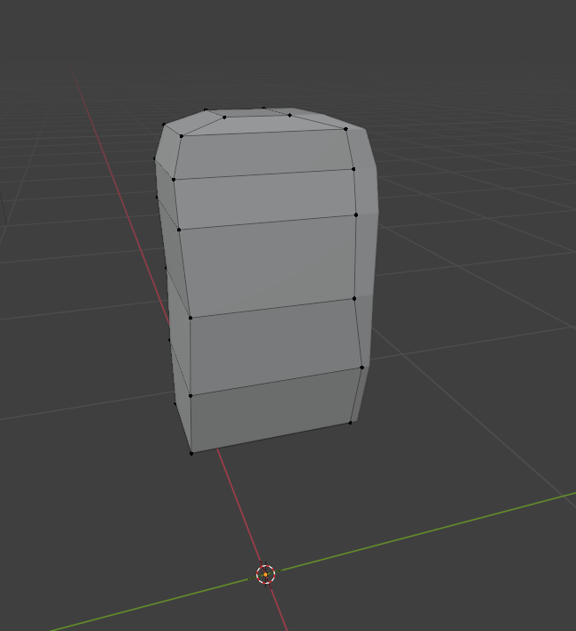

Turnaround
To model my character, I made a turnaround sheet as a general draft of what the character would look like.

Feedback
What did you like about the design?
"I like the head. It's round."
"I like the simplicity of the character's proportions."
What do you dislike about the design?
"The arm proportions are uneven and the design is too simplistic."
"The character is lacking any detail."
Improvements
I kinda forgot to work on improvements whoops ¯\_(ツ)_/¯
The proportions of the arms were fixed while modelling as the right hand side of the character was mirrored.

Torso
I started by making a vertical loop cut on this cube, deleting the left half and then mirrored the cube.
I then added more loop cuts and shaped the torso to fit with the turnaround.

Testing
From other angles, I think the torso is lacking much detail when looking on the side.
Feedback
How do you feel about the proportions of the torso?
"asdasd."
"asdasd"
Do you think this torso achieves the style I'm designing for and why?
"Yes it does, because of it's low poly design"
"It's alright, it fits the style because of the simplicity of the design for the torso"